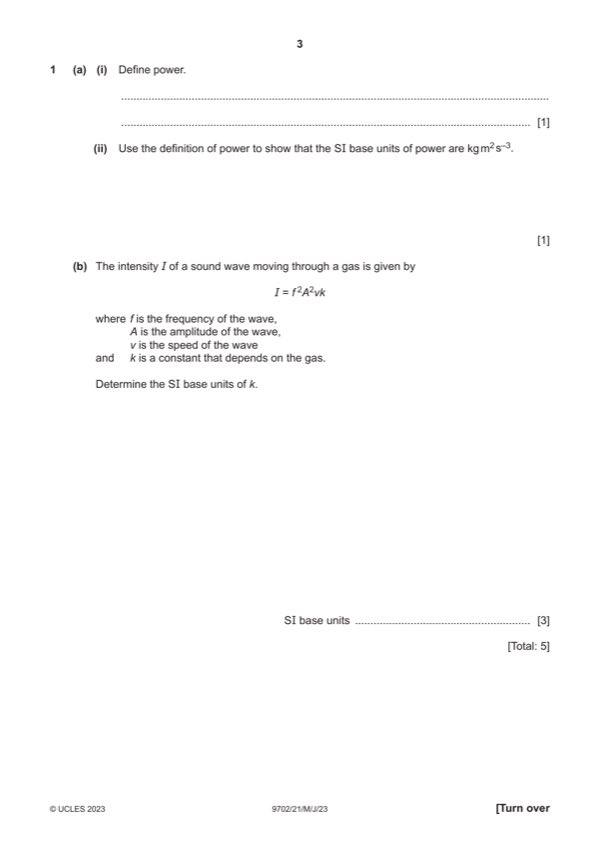

Question 1

Original paper page 3
Part 1(a)(i) — solution
- [B1] Obtain/use: work done per unit time
Mark points
- [B1] Obtain/use: work done per unit time
Part 1(a)(ii) — solution
- [B1] Obtain/use: (P = W / t gives) units: kg m2 s–2 / s = kg m2 s–3
Mark points
- [B1] Obtain/use: (P = W / t gives) units: kg m2 s–2 / s = kg m2 s–3
Part 1(b) — solution
- [A1] Obtain/use: units of k: kg s–3 / [(s–1)2 m2 m s–1]
Mark points
- [A1] Obtain/use: units of k: kg s–3 / [(s–1)2 m2 m s–1]